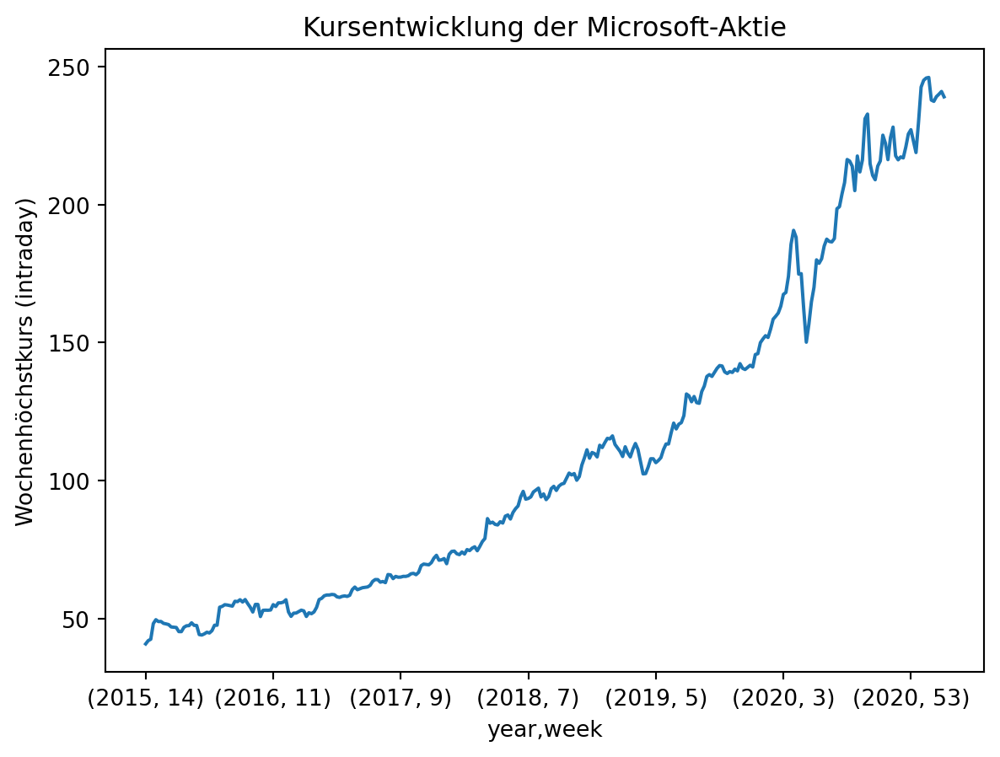

penguins = pd.read_csv(filepath_or_buffer = '01-daten/penguins.csv')6 Dateien lesen und schreiben
Pandas bietet eine Reihe von Funktionen, um Dateien einzulesen und zu schreiben, deren Namensgebung einem einheitlichen Schema folgt. Funktionen zum Lesen von Dateien werden in der Form pd.read_csv() und Funktionen zum Schreiben in der Form pd.to_csv() aufgerufen. Mit Pandas können auch Dateien aus dem Internet abgerufen werden pd.read_csv(URL).
| Format Type | Data Description | Reader | Writer |
|---|---|---|---|
| text | CSV | read_csv | to_csv |
| text | Fixed-Width Text File | read_fwf | NA |
| text | JSON | read_json | to_json |
| text | HTML | read_html | to_html |
| text | LaTeX | Styler.to_latex | NA |
| text | XML | read_xml | to_xml |
| text | Local clipboard | read_clipboard | to_clipboard |
| binary | MS Excel | read_excel | to_excel |
| binary | OpenDocument | read_excel | NA |
| binary | HDF5 Format | read_hdf | to_hdf |
| binary | Feather Format | read_feather | to_feather |
| binary | Parquet Format | read_parquet | to_parquet |
| binary | ORC Format | read_orc | to_orc |
| binary | Stata | read_stata | to_stata |
| binary | SAS | read_sas | NA |
| binary | SPSS | read_spss | NA |
| binary | Python Pickle Format | read_pickle | to_pickle |
| SQL | SQL | read_sql | to_sql |
Im Folgenden wird der Datensatz palmerpenguins mit Pandas eingelesen.
palmerpenguins

Meet the Palmer penguins von @allison_horst steht unter der Lizenz CC0-1.0 und ist auf GitHub abrufbar. 2020
Der Datensatz steht unter der Lizenz CCO und ist in R sowie auf GitHub verfügbar. 2020
# R Befehle, um den Datensatz zu laden
install.packages("palmerpenguins")
library(palmerpenguins)Horst AM, Hill AP und Gorman KB. 2020. palmerpenguins: Palmer Archipelago (Antarctica) penguin data. R package version 0.1.0. https://allisonhorst.github.io/palmerpenguins/. doi: 10.5281/zenodo.3960218.
Die Funktionen zum Lesen von Dateien erwarten eine Pfadangabe, die positional oder mit einem Schlüsselwort übergeben werden kann. Das Schlüsselwort für die Pfadangabe variiert abhängig vom Dateityp und lautet für eine kommaseparierte CSV-Datei filepath_or_buffer.
Ein Blick auf die Daten mit der Methode penguins.head():
print(penguins.head()) species island bill_length_mm bill_depth_mm flipper_length_mm \
0 Adelie Torgersen 39.1 18.7 181.0
1 Adelie Torgersen 39.5 17.4 186.0
2 Adelie Torgersen 40.3 18.0 195.0
3 Adelie Torgersen NaN NaN NaN
4 Adelie Torgersen 36.7 19.3 193.0
body_mass_g sex year
0 3750.0 male 2007
1 3800.0 female 2007
2 3250.0 female 2007
3 NaN NaN 2007
4 3450.0 female 2007 
Bill dimensions von @allison_horst steht unter der Lizenz CC0-1.0 und ist auf GitHub abrufbar. 2020
Einen Überblick über den Datensatz verschafft die Methode DataFrame.info().
print(penguins.info())<class 'pandas.core.frame.DataFrame'>
RangeIndex: 344 entries, 0 to 343
Data columns (total 8 columns):
# Column Non-Null Count Dtype
--- ------ -------------- -----
0 species 344 non-null object
1 island 344 non-null object
2 bill_length_mm 342 non-null float64
3 bill_depth_mm 342 non-null float64
4 flipper_length_mm 342 non-null float64
5 body_mass_g 342 non-null float64
6 sex 333 non-null object
7 year 344 non-null int64
dtypes: float64(4), int64(1), object(3)
memory usage: 21.6+ KB
NoneEinige Datentypen wurden nicht erkannt. Den betreffenden Spalten wurde der Sammeltyp object zugeordnet. Den Funktionen zum Einlesen von Daten kann mit dem Argument dtype der Datentyp übergeben werden. Für mehrere Spalten ist dies in Form eines Dictionaries in der Form {'Spaltenname': 'dtype'} möglich. Mit der Methode DataFrame.astype() ist dies auch nachträglich möglich.
penguins = pd.read_csv(filepath_or_buffer = '01-daten/penguins.csv', dtype = {'species': 'category', 'island': 'category', 'sex': 'category'})
# nachträglich
# penguins = penguins.astype({'species': 'category', 'island': 'category', 'sex': 'category'})
print(penguins.info())<class 'pandas.core.frame.DataFrame'>
RangeIndex: 344 entries, 0 to 343
Data columns (total 8 columns):
# Column Non-Null Count Dtype
--- ------ -------------- -----
0 species 344 non-null category
1 island 344 non-null category
2 bill_length_mm 342 non-null float64
3 bill_depth_mm 342 non-null float64
4 flipper_length_mm 342 non-null float64
5 body_mass_g 342 non-null float64
6 sex 333 non-null category
7 year 344 non-null int64
dtypes: category(3), float64(4), int64(1)
memory usage: 15.0 KB
NoneEinige Spalten weisen ungültige Werte auf. Die Tiere mit unvollständigen Werten sollen aus dem Datensatz entfernt werden.
- Mit der Methode
DataFrame.apply(pd.isna)werden fehlende Werte bestimmt. - Mit der Methode
DataFrame.any(axis = 1)wird das Ergebnis zeilenweise aggregiert. any gibt True zurück, wenn mindestens ein Element True ist. - Mit der Methode
sum()wird die Anzahl der Zeilen mit fehlenden Werten bestimmt. - Mit
np.where()wird deren Indexposition bestimmt. - Mit der Methode
DataFrame.drop()werden die betreffenden Zeilen entfernt.
# Fehlende Werte bestimmen
print(penguins.apply(pd.isna).head(), "\n")
# zeilenweise aggregieren
print(penguins.apply(pd.isna).any(axis = 1).head(), "\n")
# Anzahl der Zeilen mit fehlenden Werten
print(f"Für {penguins.apply(pd.isna).any(axis = 1).sum()} Pinguine liegen unvollständige Werte vor.\n")
# Indexpositionen bestimmen
print(np.where(penguins.apply(pd.isna).any(axis = 1))[0])
# Zeilen entfernen
penguins.drop(np.where(penguins.apply(pd.isna).any(axis = 1))[0], inplace = True) species island bill_length_mm bill_depth_mm flipper_length_mm \
0 False False False False False
1 False False False False False
2 False False False False False
3 False False True True True
4 False False False False False
body_mass_g sex year
0 False False False
1 False False False
2 False False False
3 True True False
4 False False False
0 False
1 False
2 False
3 True
4 False
dtype: bool
Für 11 Pinguine liegen unvollständige Werte vor.
[ 3 8 9 10 11 47 178 218 256 268 271]Kontrolle:
print(penguins.info())<class 'pandas.core.frame.DataFrame'>
Index: 333 entries, 0 to 343
Data columns (total 8 columns):
# Column Non-Null Count Dtype
--- ------ -------------- -----
0 species 333 non-null category
1 island 333 non-null category
2 bill_length_mm 333 non-null float64
3 bill_depth_mm 333 non-null float64
4 flipper_length_mm 333 non-null float64
5 body_mass_g 333 non-null float64
6 sex 333 non-null category
7 year 333 non-null int64
dtypes: category(3), float64(4), int64(1)
memory usage: 17.0 KB
None6.1 Zeitreihen einlesen
Mit Pandas ist es leicht möglich, Zeitreihen einzulesen. Durch string parsing können beliebige Zeichenketten als datetime interpretiert werden.
Wenn der innere Aufbau einer Datei bekannt ist, können die notwendigen Parameter direkt beim Einlesen beispielsweise mit pd.read_csv() übergeben werden. Dazu werden die Parameter parse_dates und date_format verwendet.
parse_dates gibt an, an welcher Stelle sich datetime-Informationen befinden. Es können verschiedene Argumente übergeben werden.
parse_dates = Truebewirkt, dass der Index als datetime interpretiert wird.- Eine Liste von Ganzzahlen oder Spaltenbeschriftungen bewirkt, dass diese Spalten jeweils als eigene Spalte in datetime übersetzt werden, bspw
parse_dates = [1, 2, 3]. - Eine von einer Liste umschlossene Liste bewirkt, dass die übergebenen Spalten in einer einzigen Spalte zusammengeführt werden, bspw.
parse_dates = [[1, 2, 3]]. Die Werte der Spalten werden mit einem Leerzeichen getrennt und anschließend interpretiert.
Pandas interpretiert die Zeichenketten nach ISO 8601 als Repräsentation eines Datums in der festgelegten Reihenfolge Jahr, Monat, Tag, Stunde, Minute, Sekunde, Millisekunde im Format YYYY-MM-DD 12:00:00.000. Als Zeichentrenner zwischen Datum und Uhrzeit sind ein Leerzeichen oder der Buchstabe T zulässig. Der Datentyp und die kleinste verwendete Einheit werden im Attribut dtype gespeichert.
Andere Formate werden mit dem Parameter date_format spezifiziert. Mit Hilfe der strftime-Dokumentation kann das Datumsformat übergeben werden.
Datumsinformationen können aber auch nachträglich als solche deklariert werden. Dafür wird die Funktion pd.to_datetime(arg, format = " ... ") verwendet. Mit dem Parameter arg wird die zu konvertierende Spalte übergeben. Mit dem Parameter format kann wie mit dem Parameter date_format ein von der ISO8601 abweichendes Datumsformat spezifiziert werden.
Unter dem Pfad ‘01-daten/Microsoft_Stock.csv’ sind Kursdaten der Microsoft-Aktie gespeichert.
Microsoft Stock- Time Series Analysis von Vijay V Venkitesh steht unter der Lizenz CC0 und ist auf kaggle abrufbar. 2021
stock = pd.read_csv(filepath_or_buffer = '01-daten/Microsoft_Stock.csv')
print(stock.head(), "\n")
print(stock.info()) Date Open High Low Close Volume
0 4/1/2015 16:00:00 40.60 40.76 40.31 40.72 36865322
1 4/2/2015 16:00:00 40.66 40.74 40.12 40.29 37487476
2 4/6/2015 16:00:00 40.34 41.78 40.18 41.55 39223692
3 4/7/2015 16:00:00 41.61 41.91 41.31 41.53 28809375
4 4/8/2015 16:00:00 41.48 41.69 41.04 41.42 24753438
<class 'pandas.core.frame.DataFrame'>
RangeIndex: 1511 entries, 0 to 1510
Data columns (total 6 columns):
# Column Non-Null Count Dtype
--- ------ -------------- -----
0 Date 1511 non-null object
1 Open 1511 non-null float64
2 High 1511 non-null float64
3 Low 1511 non-null float64
4 Close 1511 non-null float64
5 Volume 1511 non-null int64
dtypes: float64(4), int64(1), object(1)
memory usage: 71.0+ KB
NoneIn der Spalte Date sind Datums- und Zeitinformationen in der Form ‘Monat/Tag/Jahr Stunde:Minute:Sekunde’ verzeichnet, die von Pandas nicht automatisch erkannt wurden. Die Spalte hat deshalb den Datentyp object erhalten.
6.2 Aufgaben Zeitreihen einlesen
Übergeben Sie der Funktion
pd.read_csv()die erforderlichen Argumente, um die Spalte Date korrekt als datetime einzulesen.Berechnen Sie die Höchstkurse für jede Woche (intraday).
Tipp 6.1: Musterlösung Zeitreihen einlesen
- Aufgabe
stock = pd.read_csv(filepath_or_buffer = '01-daten/Microsoft_Stock.csv',
parse_dates = ['Date'], # alternativ: [0]
date_format = '%m/%d/%Y %H:%M:%S')
print(stock.head(), "\n")
print(stock.info()) Date Open High Low Close Volume
0 2015-04-01 16:00:00 40.60 40.76 40.31 40.72 36865322
1 2015-04-02 16:00:00 40.66 40.74 40.12 40.29 37487476
2 2015-04-06 16:00:00 40.34 41.78 40.18 41.55 39223692
3 2015-04-07 16:00:00 41.61 41.91 41.31 41.53 28809375
4 2015-04-08 16:00:00 41.48 41.69 41.04 41.42 24753438
<class 'pandas.core.frame.DataFrame'>
RangeIndex: 1511 entries, 0 to 1510
Data columns (total 6 columns):
# Column Non-Null Count Dtype
--- ------ -------------- -----
0 Date 1511 non-null datetime64[ns]
1 Open 1511 non-null float64
2 High 1511 non-null float64
3 Low 1511 non-null float64
4 Close 1511 non-null float64
5 Volume 1511 non-null int64
dtypes: datetime64[ns](1), float64(4), int64(1)
memory usage: 71.0 KB
None- Aufgabe
Die Pandas-Methode Series.dt.weekofyear() wird seit einiger Zeit nicht mehr unterstützt (siehe Dokumentation). Die Funktion wurde durch Series.dt.isocalendar().week ersetzt.
# Jahr und Woche isolieren
print(stock['Date'].dt.isocalendar().week.head(), "\n")
print(stock['Date'].dt.isocalendar().year.tail())
# Jahr und Woche in den DataFrame einfügen
stock.insert(loc = 1, column = 'week', value = stock['Date'].dt.isocalendar().week)
stock.insert(loc = 1, column = 'year', value = stock['Date'].dt.isocalendar().year)
# Maximum für jede Woche mit groupby bestimmen
print(stock.groupby(by = ['year', 'week'])['High'].max())
# grafisch darstellen
stock.groupby(by = ['year', 'week'])['High'].max().plot(ylabel = 'Wochenhöchstkurs (intraday)', title = 'Kursentwicklung der Microsoft-Aktie')0 14
1 14
2 15
3 15
4 15
Name: week, dtype: UInt32
1506 2021
1507 2021
1508 2021
1509 2021
1510 2021
Name: year, dtype: UInt32
year week
2015 14 40.76
15 41.95
16 42.46
17 48.14
18 49.54
...
2021 9 237.47
10 239.17
11 240.06
12 241.05
13 239.10
Name: High, Length: 314, dtype: float64
6.3 Schwierige Dateien einlesen
Das Einlesen von Dateien ist nicht immer einfach. Werkzeuge und Strategien zur Bewältigung schwieriger Fälle finden Sie im Methodenbaustein Einlesen strukturierter Datensätze. Dort wird auch der Umgang mit fehlenden Werten ausführlich behandelt.